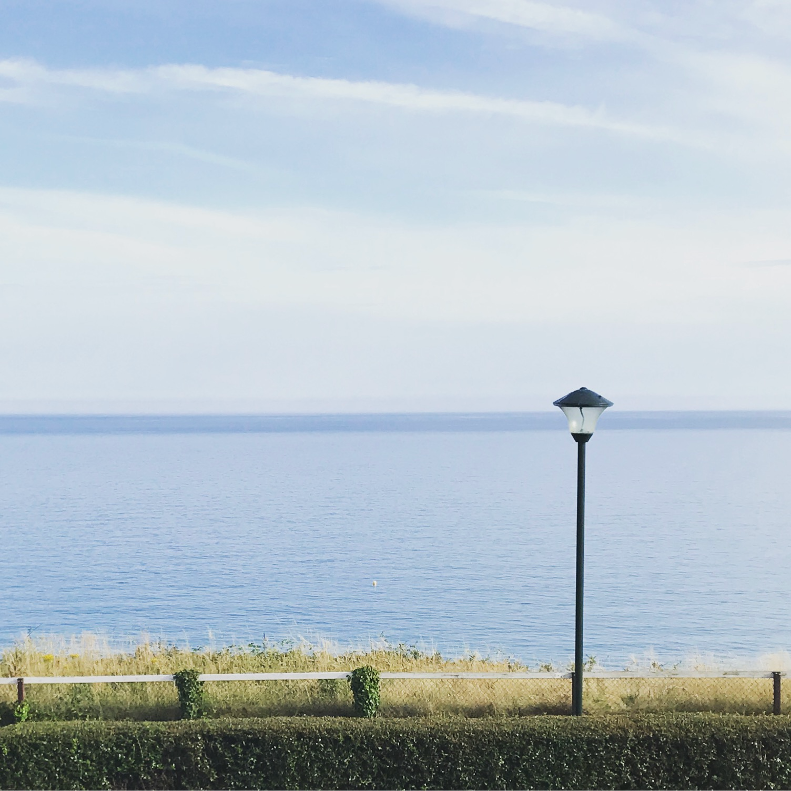

Places
Spring Lake
40.1537° N, 74.0279° W
Englewood
40.8929° N, 73.9726° W
Pascack Valley
41.0011° N, 74.0320° W
Bournemouth
50.7192° N, 1.8808° W Highland Brook
41.0022° N, 74.0321° W
Kingsland
40.8090° N, 74.1227° W